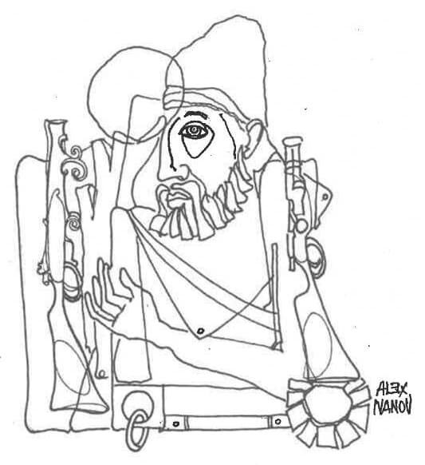

Acțiunea lui Iorgachi eșuând, propaganda grecească a închiriat un hotel în orașul Ghevgheli, unde antarții oblăduiți de autoritățile turcești își dădeau întâlnire și elaborau planuri. În ținutul Megleniei este Mănăstirea Sfântul Ilie. De foarte mulți ani slujba religioasă se făcea la această mănăstire în limba română. Sfătuite de antarți, autoritățile turcești au alungat pe călugării români și au adus în loc călugări greci. Ca egumen al mănăstirii a fost instalat un ofițer grec, fost antart, cu numele de Paraschevopulos, iar acum purta numele de cuviosul Ioakimos.
La Ghevgheli activa un ofițer grec care făcea pe negustorul de făină și un alt grec, anume Dimitrios Kakavis, proprietarul hotelului închiriat și pus la dispoziția antarților.
Autoritățile turcești au început să aresteze în masă pe români, înscenându-le procese de neloialitate față de statul turc. Cel care culegea delațiunile și le preda autorităților turcești era un anume Askitis, dragomanul consulului turcesc din Salonic. Mulți dintre cei arestați au fost condamnați pe viață și trimiși departe în interiorul Turciei, în insula Rodos, Budrum Cale, Yemen și la Fezan, în Libia. În închisoarea de la Fezan a stat închis și profesorul român Constantin Noe, învățătorul Constantin Canacheu și învățătorul Stoe Pampor. Odată cu victoria democratică a junilor turci, deținuții au fost grațiați, mulți însă, neputând suporta clima caniculară din Yemen și oaza Fezan, nu s-au mai întors acasă.
Totuși, chiar după victoria junilor turci arestările au continuat în Meglenia. În sate nu au rămas fără numai femeile. Un grup de tineri megleno-români s-au hotărât atunci să-l împuște pe călăul Askitis. Sorții au căzut asupra lui Costa Canacheu, zis țirțiricu. Cum el nu cunoștea nici Salonicul, nici [pe] Askitis, a fost însoțit de un alt român, anume Hrira Caramiha din Samarina. Canacheu s-a postat la ușa consulatului și, când să iasă Askitis, omul lui Papadiamantopulos, consulul grec din Salonic, a fost împușcat mortal. Menționez că după războiul mondial, Papadiamantopulos a fost numit ambasador al Greciei la București. Guvernele „României Mari”, care abandonaseră total cauza românimii din Macedonia, conlucrau cu el și îl invitau la recepțiile oficiale, în timp ce atâtea case românești din Meglenia purtau încă doliul pentru cei morți în deșertul Libiei și al Arabiei din cauza lui. Cât de mare a fost pierderea lui Askitis pentru greci, se [vede] din faptul că, scurt timp după aceea, Caramiha a fost asasinat în plină stradă la Salonic, iar Costa Canacheu într-un sat din jurul Salonicului. Totuși, populația românească din Meglenia scăpase de un călău. Rămânea acum lichidarea cuviosului Toakimos, stareul mănăstirii, cel care izgonise pe călugării români și înlocuise limba română de la oficierea slujbei religioase, într-o regiune unde nu exista nici picior de grec.
Autoritățile școlare și bisericești ale românilor au protestat pe lângă guvernatorul Macedoniei, Galip Pașa, împotriva pactizării armatei turcești cu antarții, precum și pe lângă comisia Europeană formată special spre a se edifica și raporta despre cauzele luptelor dintre diferitele naționalități din Macedonia.
În urma acestui demers, Banda lui Ianis Avgheros a fost capturată de armata turcă între Oșani și Luminița. În această bandă se găseau și câțiva mercenari turci.
La interogator, Avgheros recunoscuse că este subvenționat de-un pașă turc, Galip Pașa, comandantul unui corp de armată, la început cu șase lire pe lună, iar mai târziu cu 15 lire, drept răsplată pentru faptele sale de arme împotriva cetelor autonomiste bulgaro-române.
Redau mai jos numele antarților din banda lui Avgheros, după cartea lui Fecief, „La justice turque et les reformes en Macedonie”, pag. 178: Ianis Avgheros din Trikala, Nikolas Klisuras din Larissa, Ilias Nikolau, Markos Gionis, Ianis Kostas și un turc, Sali.
În timpul războiului balcano-turc, când armata greacă opera în regiunea Megleniei, Nikolas Klisuras, fostul antart din banda lui Avgheros, comandantul unui detașament militar acum, deși trecuseră cinci ani, în urma democratizării constituției turcești, luptele interne dintre naționalități nemaiexistând, totuși numitul ofițer fost antart, care avea pică pe populația românească din Meglenia, ajungând în satul Luminița, prima lui grijă a fost să spânzure pe președintele comunității românești împreună cu Ivan Chihaia, și a împușcat în mijlocul satului pe Ivan Șulca, Tuți Dugi și Stroe Cioti.
Cine să protesteze împotriva acestor nelegiuiri? Guvernul român? Nici o schițare de protest. În sânul Partidelor de guvernământ, Liberal și Conservator, erau mulți politicieni descendenți din familii fanariote și levantine, care sabotaseră și mai sabotau cauza românească din Macedonia.
Starețul Mănăstirii Sfântul Ilie, ofițerul antart în rasă călugărească Toakimos, își făcuse un prozelit în satul Oșani, pe băcanul Ita Domuzi.
Domuzi, omul de legătură între banda lui Avgheros și comitetul grec din Ghevgheli, era mereu pe drumuri. În lipsa lui, starețul se ducea la băcănie, până când, într-o zi, îi făcuse anumite propuneri soției băcanului. Cum româncele din Macedonia sunt renumite pentru fidelitatea lor conjugală, precum și pentru castitatea fecioarelor, adulterul fiind necunoscut, soția își înștiințează soțul. Domuzi face rost de o cantitate de stricnină de la un farmacist român din Salonic și își sfătuiește femeia să-l otrăvească pe „sfântul stareț”. Într-o zi, pe când Domuzi era plecat după cumpărături la Ghevgheli, vizitată fiind de stareț, ea îl invită la masă și îl lasă singur, scuzându-se că postește și că trebuie să stea în prăvălie.
Starețul a mâncat cu poftă, însă după câtva timp, stricnina făcându-și efectul, cuviosul părinte a început să se zvârcolească și apoi a murit. Moartea lui Ioakimos a produs mare zarvă în sânul comitetului grecesc din Ghevgheli. Constatându-se la disecție că era otrăvit cu stricnină, Domuzi este arestat, dar el a demonstrat că în ziua respectivă nu era acasă, ci la Ghevgheli. De teamă să nu-l piardă pe Domuzi, prozelit zelos pentru cauza grecească, comitetul grecesc nu a mai făcut pâră împotriva soției băcanului.
Epilogul: românii au scăpat de „sfântul stareț”, fostul ofițer grec Paraskevopulos și fostul antart.
Din cele relatate mai sus, guvernul turc era un complice față de formarea și acțiunea bandelor grecești.
Rațiunea? În timp ce bulgarii și românii luptau pentru autonomia Macedoniei (înțeleg independență), prin urmare ei atentau la integritatea frontierelor imperiului otoman, grecii erau mai de preferat. Deocamdată ei se rezumau la grecizarea elementelor alogene. Am putea spune că militau chiar oarecum și pentru menținerea statu quo-ului în Macedonia. O Macedonie autonomă (adică independentă) ar fi însemnat mormântul cauzei grecești la nord de Olimp, întrucât nu numai la nord de Olimp, ci chiar mult mai spre sud, adică la nord de munții Oeta și Agrafa, până la schimbul de populație intervenit după primul război mondial între Grecia și Turcia, urmașii lui Socrate și Pericle au fost într-o înspăimântătoare minoritate.
Or, până la grecizarea Macedoniei trebuia să treacă mult, foarte mult timp, dată fiind rezistența naționalităților eterogene. Astfel, pentru guvernul turc iridenta grecească era mai de preferat.
De această suplețe diplomatică a grecilor și-au dat seama și românii, însă cu mult mai târziu.
Fruntașii iridentei române au izbutit să convingă oficialitățile turcești că, dintre toate naționalitățile conlocuitoare în Macedonia, românii sunt cei mai interesați pentru menținerea dominației turcești la sud de Balcani. Românii, neputând aspira la o unire a lor cu țara Românească, dată find interpunerea între aceste două grupuri românești a unor alte state suverane, menținerea La viață națională a românilor numai în cadrul Imperiului otoman putea avea loc. Convins de acest lucru, sultanul dă în cele din urmă cunoscutul firman prin care se recunoștea de drept existența minorității române în Turcia. (Până aci, pentru statisticienii turci nu exista rubrică de apartenență etnică, tot ce era creștin ortodox fiind considerat grec și lăsat sub autoritatea spirituală a Patriarhiei din Constantinopole — Rum Patriki). Socot că în cele din urmă între români și bulgari, dacă nu ar fi fost alungată Turcia din Balcani, ar fi izbucnit un conflict tot atât de înverșunat ca acela dintre greci și români. Renunțând la autonomia Macedoniei, românii ar fi atentat la viitorul macedo-bulgarilor. Cred că aceasta a fost și rațiunea pentru care Ștefan Mihăileanu a fost asasinat de agenții organizației bulgare.
Lista românilor din Meglenia arestați prin înscenările lui Askitis și aruncați în diferite închisori din Turcia:
Satul Oșani: Stoe Pampor, Dumitru Sturi, Diacu Gica, Petre Sotir, Vanghele Buciu, Hrista Marciu, Cioca Menciu, Tanasi Terzi, Ivan Galia, Stoia Botir, Nucica Burac, Dima Murgea, Gona China, Riza Ada, Nuna Zana, Piti Perca, Foti Ciorta, Gheorghe Iachișa, Avram Zega.
Satul Berislav: Dumitru Iciu, Tașa Chihaia, Dionis Vasile, Vasile Duciu, Stoian Iofce, Riza Conda, Ivan Pușa, Duciu Petruș, Iepa Pacea, Satul țărnareca, Ioan Gh. Nastu, Tanasi Nastu, Ioan Nastu, Nicola Papanicola, N. Hrista Jara, Tanasi Jara.
Satul Luminița: Gona Meghea, Tanasi Hrista, Tanasi Casap, Dima Ghimuși, Dima Ecea, Tașa Paciuc, Dima Delmian, Proșa Migea, Vlaicu Manea, Tașca Pifu, Petre Ogea, Stavre Isu, Tuci Cacoran, Satul Huma, Heista Riza, Petre M. Leșa, Ivan Dumitru, Vanghele Micu
Satul Cupa: Perre Popa Dima, Tașa Stoici, Dimu Petcu, Ghimu Ghicu, Tani Ioan, Dimu Stoiu, Traian Ciupa.
Lista românilor din Meglenia, satul Livezi (deși situat în Meglenia, este locuit de români din tribul gramostean) arestați: A.D. Canacheu, St. Canacheu, D.I. Budera, Gh.F. Guli, Tașcu Vangheli, Toli C. Chiosi, N.M. Nedi, St. Beca, St. Sotir, Tușu C. Farini, Nachi Ruca, Gușu I. Limona, Nicolae Hristu, D. Papaconstantin, M.G. Guli, Nașu Caramiciu, Tașu Caragheorghe, G.N. Mișu, I.G. Farini, Foti Vrana, D.G. Bocea, D.N. Bocea, Nacu Rapca, Gh. Nașu Picu, Nachi Gh. Lesne, Hrista Farini, Gh.N. Hrisicu, Gh.D. Bicu, Ion St. Abrazi, Nicolae St. Abrazi, D.N. Beli, G.S. Șauli, M.C. Trandafili, G.St. Culerda, St.D. Sivi, Tica Gapa, C. Saramandu, M.Goli Saramandu, Oani Saramandu, Maria C. Saramandu, Marușca C. Saramandu, Nicolae Corculescu, N.I. Iepure, D.G. Barza, M.D. Cucuda, C.D. Cucuda, Sotir D. Barza, Cutula D. Barza, N. Neșa, N. Mața, Nași Greba, Gh.D. Ghizari, D. Tașu Gherani, Onciu Bola, Costa Chichen, Iancu Barboșca, Gh. Papanastasi, Gh. Taușan, Iana Dona, Piceava ......, M.G. Ghizari, St. N. Iorgu, Costa Ciota, Gh.N. Mavricapa, Gh. Panci, N.D. Anagnosti, Dina Trandafili, Apostol Condu, Tașu I. Boza, Sterie Tegu Ghiță, Sterie Manguschi, Gh.T. Farini, N.St. Mangușar, Sterie Pușanu, Zisu Tabacu, Tașu Pașata, Foti Pașata, Todi D. Gioga, Dina Pașata, Stama D. Budera, Chiciu Tabacu, Sterie N. Brova, Nachi Babagianu, Nicolae Capsu, Tașcu Custica, Gh. Pociu
(86 de persoane)
Lista românilor uciși de bandele de antarți greci de sub comanda lui Kostas Akritas (alias Mazarakis), ofițerul grec Tellos Agras, alias Kostas Agapinos și Pavlos Melas: Preotul Papanace, Cola Cutroni, Gula Cucutegu, Bebe Mocanu, Iani Apala, Toli Carafoli, Miși Paceavura, Iani Dzima, Tușu Vrana, Gheorghe Cutova, Ian țițimeaua, Gheorghe Blacioti, Atanase Cealera, țiț Blacioti, Apostol I. Caramitru, Gh. Caraiani, Gh. Hondruanton, Gh.D. Caranica, D. Adamaca, Gh. Dalametra, Nicolae Prapa, Gh. Atanase Gachi, Sterie Busbuchi, Sterie Furchioti, Mitru Furchioti, Cola Furchioti, Ian Greca, Cutula Bola, Gh.I. Mustaca, Dumitru Ziseca, Cola Ceamitru, Costa Hleaha, Piti Tamuiani, Iani Bufa, Piti Soldatu, Gheorghe Șula, Iani Vani, Hrista Band, Dumitru Hagicu, Gheorghe Jacachi, Panaioti Bagiuiani, Tușa Calaiati, Hrista Cuțitaru, Gheorghe Murgiu, Gheorghe Fruxilea, Bușu Bușulenga, Cola Becea, Col Cutroni Ceamitru, Alexe Cuturicu, Guta Cuturicu, Costa Cacioiani, Dzima Agorasti, Gușa Bitîrnu, Dumitru Cuțuiani, Miltiade Papari, Nicolae Zarcadi, Nicolae Averu, Iani Blicușu, Atanase Caranașu, Nic. Papastere, Mihali Mahera, Ioan Ceamitru, Zicu Adamicu, Alexe Averu, Dumitru Huleva, Gheorghe Gherasi, Soția lui Gh. Gherasi, Vasile Jacachi, Gușu Juguleanu, Gheorghe Casapi, Tușu Juguleanu, Dina Caranica, Gheorghe Varsami, Tolea Cațaroiani, Apostol Ceara, Gușa Luca, Gheorghe Rusu, Gheorghe Carafoli, Nicola Cufuiori, Hristu Huleva, Iani Lago, Sterie Plastira, Cola Daufa, Tușa Faca, Cola Gableța, Cola Luzu, Gușa Ioți, Costa Mișaca, Nastase Prapa, Iani Cutova, Ghoerghe Cutova, Iani Mocanu, Iorga Mocanu, Dică Mitra, C. Caranica, Dimitri Jacachi, Ioan Cuturicu, Sterie Zarcada, Ioan Dăscălicu, Ioan Hristacu, Gușa Sunburu, Petre Bușulenga, I.St. Cealera, Gheorghe Hristacu, Atanase Mișarli, Iani Gula, Bușa Tanasi Zisi, Guta Colcu, Dumitru Gheorghe, Panaioti Caramitru
(110 persoane)
Trebuie să se aibă în vedere că satele Xirolivad și Selia sunt numai locuințe de vară, în timpul iernii populația cobora în orașul Veria. Dacă în manualul de geografie al lui Tsamasfiros, tipărit în 1925, orașul Veria avea o populație de 7.550 de locuitori, constând din greci, români, turci, evrei și țigani, ne putem da seama cât de mari au fost jertfele acestor localități pe altarul menținerii românismului în Macedonia.
Români uciși de antarți din satul Gramaticova: Ghișă Celea, Hrista Celea, Mita Nasta, Colipetri, Hrista Balamaci, Vanghele Pundichi, Hristu Tugearu, Hrista Preșa, Mita Dică, Coli Mitrușu, Costa Sarafu, Dumitru Sarafu, Dina Coli, Gheorghe Lolea, Coli Iaciu, Tase Iorgachi, Chendra Iorgachi. Din satul Paticina, Costarelli, Feciorul lui Costarelli, Loba Gheorghe, Sofia Tase, Mihali Juja, Cola Roșu (ars în casă), Mihali Chendra Dina, Haida Costa Mușat, Chita Gachi, Ioan Ionescu, Chita Mușat. Din satul Papadia, Gheorghe Gachi, Hrista Paxi, Vasile Gachi, Ionachi Doda, Zicu Iaciu. Din orașul Vodena, Mihali Duca, Bajdechi
Din satul Belcameni: Vanghele Niculeanu
Din satul Carăhău: Adam Muși
Din satul Negovani: Tomaidi, Preot Tudor Papagheorghe, Hristu Papa, Naca Șuma
Din satul Pisuderi: Dumitru Duma
Din satul Hrupiște: Dicea Gușu, Nicolae Poteu, Mitacu
Din satul Neveasta: Foti Bașe, Nanu și soția lui
Din satul Nijopole: Gușu Marcu, Învățătorul Nijopoleanu
Din satul Vlahoclisura: Revizor școlar Ghica Const., Nicolae Tegu, Gheorghe Nasta
Din satul Crușova: Constantin Nașcu, Tașcu Darja, Vanghele Nicolae, Nic. Toma Nasi
Din satul Corino: Măcelărirea celor 2000 de oi și 200 de vaci ale celnicului Zega
Din satul Gopeș: Alex. Coșca, Gheorghe Șunița, Mitru Pașu Ghega, Gheorghe Dati
Din satul Târnova: Toma Pavli, Maria Globaru
Din satul Magarova: Mihali Dida
Din satele Magarova și Târnova: Gh. Nazari, Piha Bogiu, Sterie Semu, M. Anduri, Antoni Chilipuri, Traian Dafin, M. Carapencea, D-tru Caramiciu
Din satul Moloviște: Ștefan Bargiu, Tasa Begu, Mitru Șoptia, Gheorghe Cașu, Nicola Ciomu, Zisi Ghișca, Hrista Bambula, Dola Spiru, S. Ciomu, Tonciu Papagheorghe
Din satul Turia: Învățător D-tru Cicma, Gheorghe Cicma, Nastase Cicma, Gheorghe Mihadaș, Sotir Furchioti, Eftimie Carapuiu, Zisi Bugicu, Spiru Caratașu, Guli Ciufeta, Nicolae Duca
Din satul Perivole: Constantinescu ........, Iorgu Guși, Tinca Apostolina, Gușa Papatodor, Nicola Apostolina, Iorgu Perdichi, Pitu Zarula, N. Fusca, Fuca .............., Leon Manuluș
Din orașul Corița: Protopop Haralamb Balamace, Sotir Balamace, Vasile Foti, Vasile Talabacu, Butaș
Din satul Avdela: Toli Papa, Sterie Papa, Pericle Puiareu, Gheorghe Pupi, Nicola Cațohi
Din satul Băiasa: Învățătorul D-tru Șumba
Din satul Furca: Furceanu ........., Sotir Furceanu
Ne lipsesc datele celor uciși în Tesalia (teritoriu grec), al celor din regiunea Ianina (Epir), precum și al celor din Macedonia orientală (regiunea Seres, Drama, Cavala), al căror număr trebuie să se ridice la mai multe zeci de victime.

Arentate neizbutite
Apostol Mărgărit - inspector școlar, Preotul Dumitru Constantinescu, Lazăr Duma - inspector școlar și vice consul, Georgescu .......... - consul general la Salonic, Petre Trifon - vice consul, Dr. Tașcu Trifon, Gh. Magiari - președintele comunității române din orașul Perlepe (unde s-a născut și mama mitropolitului Andrei Șaguna), Dr. Pericle Pucerea, Preotul Papatodi .......... , Pictorul C-tin Școdreanu, Miu Dafin, N. Petrașincu, Gheorghe Bela, Învățătorul Nic. Buia, Iana Buracu, Tașcu Tirpa, Gheorghe Cherestigiu, N. Mazu, N. Bașcalfa, C-tin Farini, Vanghele Anastase, Sotir Papa, M. Zugrafu, Ianachi Cardula, Preotul Papazisi din Samarina, Gheorghe Globaru, Nicolae Balamoti, N. țața, Costa Chiose, Vasile Hasangi, Învățătorul Ion Peaha, Vanciu Cardula, Ion Papahagi, Vasile Zarma, Panait Șașamuti, Dumitru Cutuplea, Ioțu Matușu , Preot Nance Papanicola, Olga Nance, Vasile Dinu din Hrupiște, Nicu Iorgu din Vlahoclisura, Toli Hagigogu din Veria, Profesor Gheorghe Cionga, Sterie Dulică, Adam Adamaca, Toli Mocanu, Apala ............., Preotul Papagheorghe, D. Palicari, Hrista Cealera, Atanase Tanașoca, Gheorghe Repidoni, Gh. Bucuvala, Cola Ciuca, Gușu Mișca, Gheorghe Dalametra, Hrista Manaculi, Hrista Ciomu, Gheorghe Iorganda, Vanghele Roșu, Muși Gachi, Miha Zdru
Personalități marcante grecești ucise de armatolii români: Tellos Agras, Mitropolitul Emilianos din Grebena, Mitropolitul Fotios din Castoria
1912. Miracolul miracolelor în istoria diplomației: cârdășia de arme greco-bulgară. Vrăjmășia de veacuri între presupușii urmași ai vechilor eleni și bulgari pentru moment lua sfârșit.
Pierzând nădejdea grecizării populației eterofone din Macedonia, spre a putea pretinde mai târziu vechea țară a traco-ilirilor marelui Alexandru Macedon, grecii schimbă armele de luptă. La rândul lor nici bulgarilor nu le convenea o Macedonie autonomă, în care s-ar fi putut dezvolta în mod egal cu bulgarii și grecii, și românii și albanezii. O Macedonie autonomă ar fi atentat la idealul formării unui mare țarat bulgar la sudul Dunării. Bulgaria avea o experiență. Ea desființase independența Rumeliei, stat cu o populație mixtă alcătuită din bulgari, români, greci, macedo-bulgari și mai ales turci, proclamat independent în urma victoriei de la Plevna. Prin anexarea Rumeliei, Bulgaria se apropia de Baia (franțuzește, la baie) tracică a arhipelagului. Cum Macedonia era locuită în cea mai bună parte de bulgari (vezi harta etnografică a epocii respective), populație care oscila între o conștiință etnică macedo-bulgară (makedonți) și panbulgară, visa să ajungă la Salonic. Sârbii, la rândul lor, trăind cu visul țarului lor, Dușan, a cărui frontieră de sud era la Capu Matapan, deși nu aveau conaționali, fără numai foarte puțini în nordul Vardarului, nu avea decât de câștigat de pe urma alianței interbalcanice. Micul Muntenegru spera și el să-și rotunjească granița prin ocuparea Sangeacului, coridor creat artificial odată cu formarea statului sârb, spre a despărți aceste două popoare de același sânge și aceeași lege.
Slăbiă și înfrântă de către Italia în urma războiului purtat în Libia, Turcia nu mai putea să reziste alianței balcanice. Ce a urmat se știe. țara iliro-tracilor, Macedonia, este hăcuită în patru ciosvârte de către învingători. Pe de altă parte, susținută de către Italia, care visa să pună piciorul în Balcani și de către Austro-Ungaria, care visa să ajungă limitrofă cu Marea Egee (și așa acest imperiu era un mozaic de popoare, nu ar fi stricat cu nimic peisajul etnic dacă se mai adăugau încă câteva națiuni), se creează statul albanez. De la răscoala lui Scanderbeg, poporul albanez nu a mai încercat să-și scuture jugul străin. Închinători la trei religii, despărțit în două triburi ale căror dialecte pot fi foarte ușor considerate limbi proprii (este foarte mare deosebirea între dialectul gheg și tosc), albanezii n-au fost niciodată uniți. Nordul catolic năzuia să ajungă într-o zi sub oblăduirea unei țări catolice, centrul musulman se simțea foarte bine în cadrul statului turc. Pentru acțiunile de jaf ale bașibuzucilor, această hoardă modernă, granițele care ar fi urmat să se impună le-ar fi dat lovitura de grație. Sudul ortodox era demult grecoman. Albanezii sunt singurul popor din Balcani care nu participă la mișcarea de resurecție a națiunilor sud-balcanice.
La dezbaterile de la Londra, care au loc imediat după victorie, punctul de vedere al guvernului român, reprezentat prin ministrul nostru din capitala Angliei, N. Mișu, era să se creeze un stat dualist româno-albanez. Acest punct de vedere este sugerat de delegația macedo-română care participă neoficial la dezbateri.
1913. Războiul interbalcanic, Ce a urmat se știe.
Ca țară care a contribuit la pacificarea Balcanilor, de data aceasta pacea se încheie la București. Arbitru: Titu Maiorescu. În timp ce la Londra cuvântul statului român de a se crea un stat albano-român nu putea avea sorți mari de izbândă, acum când destinul poporului român din sudul Dunării se hotăra la București, patria mamă își sacrifica pe fiii cei mai buni, urmașii regelui, ale cărui inițiale voievozii munteni le puneau cu mândrie drept titulatură: „Io .......... voievod al .......... etc.”. Soarta poporului român din sud este abandonată, și anume într-un moment când condițiile de pace le dicta România.
Și iată că s-au adeverit spusele lui Agras: „Marii învinși veți fi voi, cuțovlahii, sacrificați de însăși patria voastră mamă, pe care o iubiți atât și pentru care luptați cu atât abnegație.”